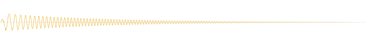
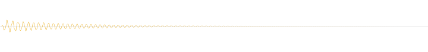
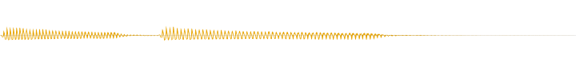

Konesans audio
Original music loops and sound effects, synthesised from scratch in design/audio/ (no samples, no soundfonts).
Music loops seamlessly (press play — the players loop); level ≈ −18 LUFS. SFX peaks ≤ −3 dBFS. Open this file from the repo so the relative links to
apps/mobile/assets/audio/ resolve.
Music loops
Sound effects


